急落相場の「底」と「守り方」
日経225・S&P500はどこまで下がるのか
― 下げ相場は「指をくわえて見ている」しかないのか？ ブル・ベアETF、空売り、信用買い残、VIXで読み解く ―
- 今回の急落の震源はAI・半導体株の巻き戻し。S&P500は高値から1割超下げて「調整局面」入り、日経平均は高値から22%下げて「弱気相場」の水準にある。
- 下値の目安は日経平均 54,000円前後（メイン）〜50,500円（リスク）、S&P500 6,650前後（メイン）〜6,250（リスク）。
- エヌビディアには従来の「循環取引」疑惑に加え、米SECが会計処理を調べているとの報道が出た。SOXはもう一段下がりうる。
- 相場には上昇で儲かる「ブル型」と下落で儲かる「ベア型」のETFがある。1357・1360・2249・SOXSは指数とほぼ鏡写しの逆の動きをする（日次の相関は−0.998）。10月半ばに25日移動平均線割れを合図にベアETFを買っていれば、11/20までに1357は+29.8%、SOXSは+122%になっていた。
- 空売りは損失が青天井。信用取引は仕組みとリスクを十分に理解するまで手を出さない。
- キオクシアなどの人気半導体株では、株価が8割下がっても信用買い残（株数）が増え続けている。これが「将来の売り」として上値を重くし、追証による投げ売りの連鎖を生む。
- 信用買い残が過去最高を記録した2026年6月がバイイング・クライマックスなら、制度信用の6か月の返済期限が来る12月に投げ売りが出尽くして需給が良くなる。感謝祭→FOMC（12/9）→信用期日→クリスマスを経て、年末に反転と櫻庭は読む。合図はVIXが50を超えてピークを打つこと。
1昨日、何が起きたのか
11月20日、東京市場では日経平均が3,007円安の56,436円（−5.06%）と、下げ幅で歴代5位の急落となった。前日の米国株安が波及し、アドバンテストやソフトバンクグループなどAI・半導体関連が集中的に売られた。プライム市場の93%の銘柄が下落する全面安である[1][2]。
同じ日の夜のNYでも売りは止まらなかった。S&P500は−3.70%、ナスダックは−5.28%、半導体株指数（SOX）は−10.7%と、2008年の金融危機を思わせる下げになった。エヌビディアは決算が市場予想を上回り、見通しも引き上げたにもかかわらず、米SECが同社の会計を調べているとの報道を受けて約14%下げた[3][4]。S&P500は週間で−8.6%、7日続落である。
背景には、①AI投資の「回収可能性」への疑念、②アンソロピックのナスダック上場に伴う換金売り（AI株を売って新規上場株を買う資金の移動）、③12月FOMCで利上げが有力視される金利高、という3つの重しがある[1][7]。
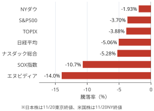
2日経225・S&P500はどこまで下がるのか
下値を考えるときは、「高値から何%下げたか」と「過去に止まった価格（節目）」の2つを重ねて見る。一般に高値から−10%で「調整」、−20%で「弱気相場（ベアマーケット）」と呼ぶ。

| 指数 | メインシナリオ（年内の下値） | リスクシナリオ（悪材料が続く場合） | 根拠 |
|---|---|---|---|
| 日経平均 | 54,000円前後（高値から−25%） | 50,500円前後（年初来安値・高値から−30%） | 11/6安値56,745円を割り込み、次の支えが薄い。50,558円（3/31安値）と高値から−30%（50,656円）が重なる |
| S&P500 | 6,650前後（高値から−15%） | 6,250前後（高値から−20%＝弱気相場入り） | 景気後退を伴わない調整は−10〜15%で止まることが多い。AI投資の縮小が実体経済まで波及すれば−20%台に入る |
日経平均は米国より下げがきつい。指数に占める値がさの半導体株（アドバンテスト、東京エレクトロンなど）とソフトバンクグループの比重が大きいためで、SOXが下げると日経平均はその分大きく下げやすい。なお日経平均は6/25の最高値（72,366円）と10/6の戻り高値（70,684円）で二度天井をつけた形になっている。日経平均の底はSOXの底と同時に来る、と覚えておきたい。
3トピック：エヌビディアの「循環取引」と会計問題 ― SOXはもう一段下がるか
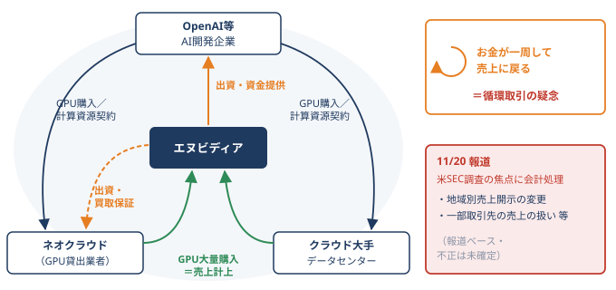
① 以前から指摘されていた「循環取引」
エヌビディアはOpenAIなどのAI開発企業や、GPUを貸し出すネオクラウド企業に出資や買い取り保証をしている。その相手先がエヌビディアのGPUを大量に買う。お金が一周して自社の売上に戻るこの構図は、本当の需要より売上を大きく見せているのではないか、と以前から疑われてきた[6]。
② 新たに会計処理が調べられている
ロイターによると、米SECの調査は会計処理に焦点を当てている。市場では、売上の大部分を占めていたシンガポール向け売上の地域別開示の方法を変えた件や、一部の取引先への売上の扱いが問題視されているとの見方が出ている[4][5]。ただし、調査が始まったことは不正の証明ではない。何も処分されずに終わる調査も多い点は区別しておくこと。
決算が良くても株価が下がるのは、市場の関心が「売上の大きさ」から「売上の中身」へ移ったためだ。調査の結果が出るまでには時間がかかり、その間は思惑で何度も売られやすい。売上が連動するTSMC、メモリ、製造装置（アドバンテスト、東京エレクトロンなど）、ネオクラウド各社にも疑いが広がる可能性があり、SOXは11/20安値を下回るもう一段安を想定しておく。SOXはすでに6/22の高値から約43%下げている。
4下げ相場は「指をくわえて見ている」しかないのか？ ― ブルとベア
答えはNO。株式市場には指数が下がると値上がりするETFがあり、普通の株と同じように現物（自分のお金の範囲）で買える。まずは、相場の世界でよく使う「ブル」と「ベア」という言葉から整理しよう。
4-1 ブル（雄牛）とベア（熊）とは
ブル（Bull＝雄牛）は、角を下から上へ突き上げて攻撃する。そこから上昇相場・強気を表す。ベア（Bear＝熊）は、前足の爪を上から下へ振り下ろして攻撃する。そこから下落相場・弱気を表す。
ETFの名前もこれに対応している。
- ブル型（レバレッジ型）：指数が上がると、その2倍・3倍上がる。下がると2倍・3倍下がる。
- ベア型（インバース型）：指数が下がると上がる。「ダブルインバース」は−2倍、「ベア3倍」は−3倍の値動き。
図4のとおり、11/20は同じ日経平均を対象にしたETFでも、ブル型の1570は−10.1%、ベア型の1357は+9.9%と正反対になった。半導体ではSOXLが−31.8%、SOXSが+31.7%である。
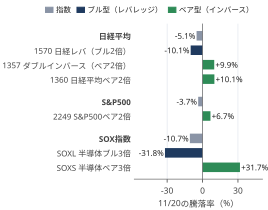
| 対象 | ブル型（上昇で儲かる） | ベア型（下落で儲かる） | 取引のポイント |
|---|---|---|---|
| 日経平均 | 1570 日経平均レバレッジ（2倍） | 1357 日経ダブルインバース（−2倍） 1360 日経平均ベア2倍（−2倍） | 円建て・東証。1357は出来高が多い定番。1360は価格帯が数十円と低く、少額から買える |
| S&P500 | 2237 S&P500レバレッジ（2倍） | 2249 S&P500ダブルインバース（−2倍） | 日本株と同じ口座・円で米国株の下落をヘッジできる。東京の取引時間に、前日のNYの動きを反映して動く |
| SOX（半導体） | SOXL 半導体ブル3倍 | SOXS 半導体ベア3倍（−3倍） | ドル建て・米国市場。SOXが1日10%下がれば約30%上がる。値動きは非常に激しい |
4-2 なぜ「下がっているのに」利益が出るのか ― ベアETFの仕組み
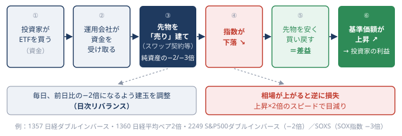
運用会社は投資家から集めたお金を担保にして、株価指数の先物を純資産の2倍（3倍）分「売り」（先物の売り建てやスワップ契約という取引を使う）。指数が下がれば先物を安く買い戻せるので、その差額がETFの資産に加わり、基準価額が上がる。つまり運用会社が代わりに「空売り」をしてくれているのと同じである。投資家にとっての違いは、損失が自分で払ったお金（投資額）までに限られること。ここが個人の空売りとの決定的な差になる。
4-3 チャートで確かめる ― ベアETFは指数の「鏡写し」
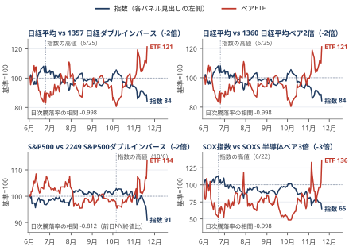
実際のチャートで見ると、指数とベアETFはちょうど上下を反転させた形で動いている。日々の値動きの相関は、日経平均と1357・1360、SOXとSOXSでいずれも−0.998と、ほぼ完全な逆相関だ。6/1から11/20までに日経平均は−15.7%、1357は+21.4%。SOXは−35.1%、SOXSは+36.1%となった。
2249の相関が−0.812と低めなのは、東京で取引される2249が前日のNYの値動きを翌日に反映するためで、時差によるずれである。仕組みが崩れているわけではない。また、6月〜10月のように指数が上下を繰り返した期間はETFが少しずつ目減りしている点にも注目したい（4-5で解説）。
4-4 ストーリー：この下落相場で、ベアETFでうまく立ち回るには
では、今回の下落で実際にベアETFを使っていたらどうなったか。ここでは「指数が25日移動平均線（過去25営業日の終値の平均）を終値で割り込んだら、翌営業日にベアETFを買う」という単純なルールで検証した（結果を知ったうえでの事後検証である点には注意）。
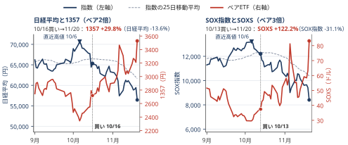
日経平均と同じように動く日本株を300万円持っていた人が、10/16に1357を75万円（保有額の1/4）買っていたとする。11/20までに保有株は約−41万円、1357は約+22万円。損失をほぼ半分に抑えられた計算になる。下げ相場でも「何もできない」わけではない。
- 買う合図を決める：25日線割れ、高値からの−5%など、感情ではなくルールで入る。
- 売る合図も先に決める：指数が25日線を回復した時、またはVIXが50を超えてピークを打った時（6章）に利益を確定する。
- 量を決める：保有株の1/4〜1/2まで。ベアETFに全財産を入れるのは「逆張りの博打」。
4-5 使う前に必ず知っておく注意点 ― 「持ちっぱなし」は目減りする
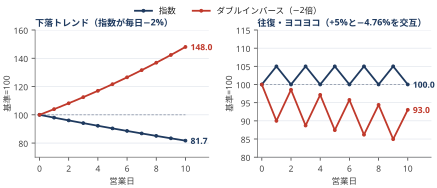
- 長く持たない：毎日「前日比の−2倍」になるよう調整されるため、上下を往復する相場では目減りする（図8）。保有は数日〜数週間の短期に限る。
- 上がれば2倍・3倍で損：相場が反発すると、上昇率の2倍（3倍）の速さで値下がりする。損切りラインを先に決めておく。
- ヘッジの量：保有株の評価額の1/4〜1/2程度を目安にする（−2倍なので、半分の金額で全体をほぼ相殺できる）。
5下落で儲けているのは誰か ― 空売りの仕組みと危険性
相場が急落した日、大きく儲けているのは高値で「空売り」をして、安値で「買い戻す」人たちだ。空売りとは、持っていない株を証券会社から借りて先に売り、後で買い戻して返す取引のことで、信用取引の口座が必要になる。
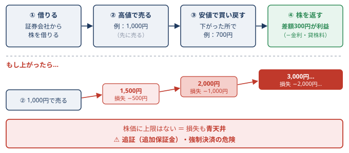
買いと空売りのリスクの違い
現物の買い：1,000円で買った株が0円になっても、損失は1,000円まで（−100%が上限）。
空売り：1,000円で売った株が3,000円になれば損失は2,000円、10,000円になれば9,000円。株価に上限がないので、損失も青天井である。さらに、急落の後には売り方が慌てて買い戻すことで株価が急騰する「踏み上げ（ショートスクイーズ）」が起きやすく、まさに今のような局面が一番危ない。
6信用買い残が下げを深くする ― 需給のメカニズム
信用取引には空売り（信用売り）だけでなく、お金を借りて株を買う「信用買い」もある。担保の約3.3倍まで買えるが、借りたお金で買った株はいずれ売って返さなければならない。証券取引所のルールで決まる制度信用取引では、返済期限は最長6か月である[11]。まだ返済されていない信用買いの残高を「信用買い残」と呼ぶ。
6-1 キオクシアで起きていること ― 株価が8割下がっても買い残は増え続ける
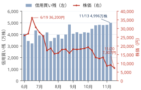
人気半導体株のキオクシアは、株価が6/22の高値36,233円から11/20の7,307円へ約80%下落した（分割調整後）。ところが信用買い残は6/19の3,221万株から11/13の4,996万株へ約55%増え、この期間で最も多い水準にある[12]。日経新聞によると、信用で買った人の含み損率は26%に達している[13]。
下がるたびに「安くなったから」と買い増し（ナンピン）している人が多いことを示している。同じ傾向はソフトバンクグループ（買い残3,285万株→4,211万株、株価は半値以下）にも見られる。東京エレクトロンやレーザーテックも高値の後に買い残が膨らみ、ここにきてようやく減り始めた[12]。
6-2 なぜ信用買い残が多いと下げが深くなるのか
信用買い残は、言い換えれば「近いうちに必ず出てくる売り注文」の予約である。これが需給を悪くする仕組みは次のとおりだ。
- 戻り売りの壁：少し反発しても、高値で買った人が「買値に戻ったら売りたい」と待ち構えているため、上値が重くなる（「しこり」とも呼ぶ）。
- 期日売り：6か月の返済期限が近づくと、損をしていても売らざるを得ない。
- 連鎖：追証による投げ売りが次の追証を呼ぶため、下げが一気に加速する。11/6〜11/20の急落はこの典型だ。
市場全体でも、二市場の信用買い残は2026年6月26日に7兆167億円と、統計開始以来初めて7兆円を超えた[14]。その後、10月から減り始め、11/13時点で5兆7,682億円と5週連続で減少している。信用で買った人の評価損益率（含み損の割合）は11/6に−21.08%まで悪化し、11/13は−15.49%だった[15]。経験則では−20%前後が「投げ売りの最終局面＝底値圏」の目安とされる（必ず反転するわけではない）。
6-3 過去の事例と同じ流れか
| 局面 | 何が起きたか | 信用買い残の動き | 底までの期間 |
|---|---|---|---|
| 2000年 ITバブル崩壊 | ネット・通信株が急騰後に崩壊。光通信は20日連続ストップ安。日経平均は2000/4/12の20,833円から2001/9に9,504円へ | 米国の信用買い（NYSE証拠金債務）はナスダックの天井と同じ2000年3月がピーク、2002年までに半分以下へ[16] | 約1年半（日経平均）。業績の裏付けがない上昇の後は長い |
| 2006年 ライブドア・ショック後 | 日経平均は2006/4/7の17,563円が天井、6/13に14,219円 | 天井の7週間後（5/26）に5兆6,977億円の高水準まで買い残が増え続けた[17] | 約2か月。買い残が減り始めてから底 |
| 2024年8月 円キャリー巻き戻し | 日経平均は7/11の42,224円から8/5の31,458円へ急落 | 1週間で9,086億円減と過去最大の減少。追証による投げ売り。評価損益率は−14.16%[18] | 約1か月。投げ売りが一気に出て、すぐ底 |
| 2026年 今回 | 6/25の最高値から−22%。人気半導体株は高値から半値〜8割安 | 6/26に過去最高の7兆167億円。個別の人気株では下げても株数が増加 | 櫻庭の読み：6か月後の12月末 |
今回は「高値の後も信用買い残が増え続ける」という点で2006年型、「AI・半導体という期待先行のテーマ株に資金が集中した」という点で2000年のITバブルに似ている。2000年との違いは、エヌビディアをはじめ実際の売上・利益が伴っていること。そのため、2000年のような1年半の下げではなく、信用の整理が終われば反転できると見る。
6-4 櫻庭の読み：6か月の返済期限が来る12月が「需給の底」
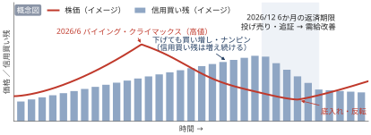
信用買い残が過去最高を記録し、日経平均も最高値をつけた2026年6月下旬がバイイング・クライマックス（買いの熱狂のピーク）だったと考える。このとき制度信用で買われた株は、6か月後の12月下旬に返済期限を迎える。期限までに売り（投げ）が出て、耐えきれない人が相場から退場すれば、「将来の売り」が消えて需給が改善する。感謝祭・FOMC・信用期日・クリスマスを通過する年末が反転のタイミングと櫻庭は読んでいる。
※注意：キオクシアの信用買いの約3分の2は「一般信用」（返済期限を証券会社が決める。無期限のものもある）で、6か月ルールがそのまま当てはまるのは制度信用の分に限られる。期日はあくまで需給の目安の一つである。
- 信用取引は担保の約3.3倍まで取引できる。損失も3.3倍の速さで膨らむ。
- 損失で担保が足りなくなると追証（追加の保証金）を求められ、期限までに払えなければ強制的に決済される。入金した額を超える借金が残ることもある。
- 今回のキオクシアのように、ナンピン買いを信用で重ねると、下げ相場で真っ先に退場させられる側になる。
- 空売りは損失が青天井。貸株料・金利・逆日歩（株の借り賃の上乗せ）などのコストも毎日かかる。
- 下落に備えたいなら、現物で買えるベアETFを少額で。損失は投資額までに限られる。仕組みとリスクを十分に理解するまで、信用取引は使わない。
7底はいつか ― 節目のカレンダーとVIXという「温度計」
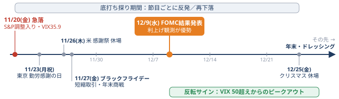
ズバリ、今回の下げは米国の感謝祭（11/26）・ブラックフライデー（11/27）、FOMC（12/9）、クリスマス（12/25）といった節目まで続く可能性があると見ている。ブラックフライデーは年末商戦の売れ行きで米国の消費の強さを確かめる場。FOMCは利上げか据え置き（利下げ）かの分かれ目で、市場は25bp（0.25%）の利上げをほぼ織り込んでいる。0.5%の大幅利上げを主張する理事もいる[7][8]。仮に「利上げ見送り」や「今回の利上げで打ち止め」といったメッセージが出れば、反転のきっかけになりうる。逆に大幅利上げなら下げは長引く。そしてその後に、6章で見た信用の返済期限（12月下旬）が控えている。
VIX（恐怖指数）とは
VIXは、S&P500のオプション価格から計算される「今後30日間に市場がどれだけ揺れると予想されているか」の指標で、恐怖指数とも呼ばれる。平常時は10〜20。株価が急落して投資家が保険（プットオプション）を買いに走るほど上がる。目安としてVIX÷16が「1日に動くと予想される幅（%）」で、今の36なら1日±2.2%、50なら±3.1%の揺れを市場が見込んでいる。
VIXが50を超えるのは、多くの投資家が投げ売り（セリングクライマックス）している時だ。2020年3月はVIXのピーク（3/16）から1週間後に株価が底を打ち、2025年4月はVIXのピーク（4/8）と株価の底が同じ日だった[9]。信用の投げ売りとVIXの急上昇は、同じ現象を別の角度から見たものでもある。
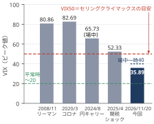
- VIXが50を超えたら準備する。ただし、超えた瞬間に飛びつかない。2008年はVIXのピーク（11月）から株価の底（翌年3月）まで4か月かかった。
- VIXが前日の高値から下がり始めた日（長い上ヒゲが出た日など）を起点に、3〜4回に分けて買い下がる。信用評価損益率が−20%前後まで悪化していれば、なお確度が上がる。
- 買いを始めると同時に、持っているベアETFは利益確定する（上昇局面では2倍・3倍で損をするため）。
8まとめ ― 急落相場の行動指針
| 局面 | サイン | やること |
|---|---|---|
| 下げ始め | 指数が25日移動平均線を終値で割り込む | 保有株の1/4〜1/2を目安に、1357／1360／2249でヘッジ。半導体株を多く持つならSOXSを少額で |
| いま（下げの途中） | VIX 30〜40、SOXが安値を更新、人気株の信用買い残が増加 | 慌てて買わない。信用でのナンピンは厳禁。ベアETFは利益確定のルールを確認 |
| 節目（11/27・12/9） | ブラックフライデーの売上、FOMCの結果と声明 | イベントの前にヘッジの量を見直す。結果を確認してから動く |
| 投げ売り | VIXが50を超える、信用評価損益率−20%前後、信用買い残の急減、日経平均54,000〜50,500円、S&P500 6,650〜6,250 | 買う銘柄の候補リストを用意しておく。ベアETFの利益確定を始める |
| 反転（年末） | VIXのピークアウト、12月下旬の信用期日通過、SOXが前の安値を割らずに反発 | 3〜4回に分けて買い出動する。信用取引・空売りは使わない |
下げ相場は「何もできない時間」ではない。ブルとベアの両方の道具を知り、守る手段（ベアETF）を持ち、需給（信用買い残）と温度計（VIX）で反転の合図を待ち、次の上昇相場に備えて資金を残しておく時間である。一番やってはいけないのは、焦って信用取引で取り返そうとすること。相場から退場しなければ、チャンスは必ずまた来る。
- OANDA証券「日経平均が1日で3,008円安」(11/20)、日テレNEWS
- 株探「日経平均 大引け 3日ぶり急反落」(11/20)、東京報道新聞
- Motley Fool／investingLive／StockTitan（11/20 米国市況）
- Reuters（SECのエヌビディア会計調査 11/20）
- Seoul Economic Daily／BigGo Finance（SEC調査の論点）
- The Register "AI's trillion dollar deal wheel"(2025/11/4)
- CNBC（ウォラー理事発言 11/18）、rateprobability.com（11/20）
- 外為どっとコム 来週の日経平均見通し(11/20)、note やまのらぼ
- Cboe VIX（11/20終値35.89、過去のピークはCboe公表値）
- 大和AM 2249商品ページ、JPX レバレッジ・インバースETF資料
- 日本取引所グループ「制度信用取引と一般信用取引の比較」
- Yahoo!ファイナンス 信用残時系列、IRBANK 信用取引情報（285A・9984・8035・6920）
- 日本経済新聞（2026/11/5、11/10 キオクシアの信用買い残・含み損率）
- 日本経済新聞（2026/6/30 信用買い残 初の7兆円台）
- JPX 信用取引現在高（11/13申込分）、日本経済新聞（QUICK信用評価損益率 11/6・11/13）
- Wolf Street／Investing.com（NYSE証拠金債務 2000年）、INTERNET Watch（光通信 2000年）
- 日本経済新聞（2026/2 信用買い残 2006年5月以来の高水準）
- 日本経済新聞（2024/8 信用買い残の過去最大の減少、評価損益率）